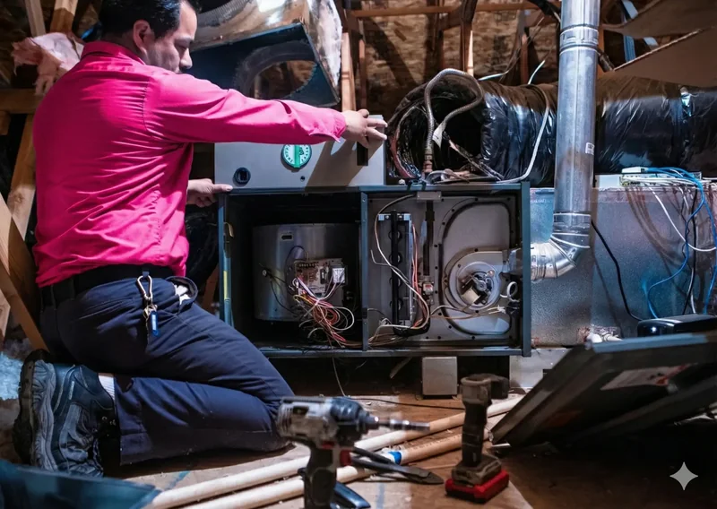
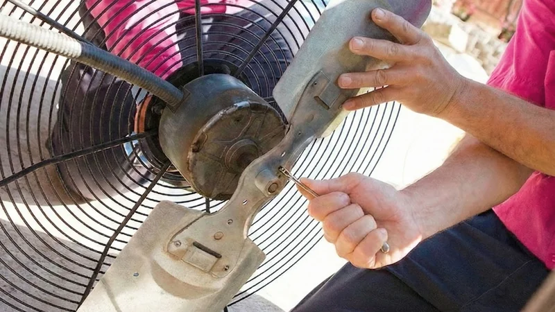

Condensate Drain Cleaning in Tampa, Florida
When Your AC Starts Leaking Water
Water dripping from your ceiling or pooling around your AC unit? That's a clogged condensate drain line—a problem that can cause serious water damage if ignored. The good news is it's a quick fix for our team. At On The Way Heating & Air, we clear these clogs fast to protect your home. Call before 1 PM and we'll be there today, or you don't pay.

At On The Way Heating & Air, we clear clogged condensate drains all across North Tampa—Carrollwood, New Tampa, USF, Temple Terrace, Wesley Chapel. Quick fix when caught early, expensive mess if ignored.
Let's talk about condensate drains, why they clog so fast in Tampa, and how to keep yours flowing.
What Is a Condensate Drain?
Your AC doesn't just cool air—it removes moisture from it. All that moisture has to go somewhere.
How it works: Warm, humid Tampa air passes over your cold evaporator coil. Moisture in the air condenses on the coil, just like a cold glass sweats on a hot day. Water drips off the coil into a drain pan below it. From the drain pan, water flows through a PVC drain line that runs outside your house or to a floor drain.
How much water? Your AC can pull 5-20 gallons of water per day out of Tampa's humid air. That's a lot of water flowing through a relatively small drain line.
Where the drain line is: The drain line usually exits near your outdoor unit, or sometimes into a floor drain in your garage or utility room. Inside, there's usually a T-shaped access point near your air handler for maintenance.
When this drain line clogs, water backs up in the drain pan, overflows, and causes damage. Your AC might have a safety switch that shuts the system down when water backs up—prevents flooding, but leaves you without cooling.
Signs Your Condensate Drain Is Clogged
Water in the Drain Pan
If you can access your drain pan (usually requires opening a panel on your air handler), standing water means the drain ain't draining. Pan should be damp but not full.
Water Leaking from the Air Handler
Water dripping from the unit itself, or stains on the ceiling around your air handler. Overflow from a clogged drain.
AC Won't Turn On
Many newer systems have float switches in the drain pan. When water level gets too high, the switch shuts the AC down to prevent flooding. System won't restart until you clear the clog and drain the pan.
Musty Smell
Standing water in the drain pan creates mold and mildew. You'll smell it—musty, damp odor near your air handler or coming from your vents.
Water Coming from the Overflow Line
See water dripping from a pipe near your air handler that's higher up than the main drain line? That's the secondary overflow—it only drains when the primary line is clogged.
High Humidity Indoors
Clogged drain line can cause the evaporator coil to ice up, which reduces your AC's ability to remove humidity. House feels muggy even though the AC's running.

Why Condensate Drains Clog So Fast in Tampa
Algae Growth
The #1 cause of drain line clogs. Algae loves warm, wet, dark environments—your condensate drain line is all three. In Tampa's humid climate, algae grows fast and forms thick mats that block the pipe.
Mold and Biofilm
Along with algae, mold and bacteria form slimy biofilm inside the drain line. This buildup accumulates gradually until it clogs the pipe completely.
Dirt and Debris
Dust that gets past your filter can end up in the condensation, creating sludge in the drain line. If you don't change filters regularly, this happens faster.
Drain Line Design
Some drain lines have sharp bends or run uphill before going down—these spots collect debris and clog first. Poor installation makes clogs more frequent.
Humidity Levels
Tampa's humidity means constant condensation, which means the drain line is always wet. No dry periods to kill algae growth.
Deep Dive: How We Clear Condensate Drain Clogs
We've got several methods depending on how bad the clog is.
Wet/Dry Vacuum Method
We attach a shop vac to the outdoor end of the drain line and create a seal with tape or our hand. Run the vacuum for a few minutes to suction the clog out. This works great for most clogs—you'll see algae, sludge, and dirty water get sucked into the vacuum.
Compressed Air Method
For stubborn clogs, we use compressed air or CO2 to blast the blockage loose. Quick bursts of pressure from the indoor access point force the clog through the line and out.
Drain Line Flush
We pour cleaning solution (vinegar, peroxide, or commercial cleaner designed for PVC) down the access point, let it sit to break down algae and biofilm, then flush with water to clear debris.
Mechanical Clearing
For really stubborn clogs, we use a drain snake or brush to physically break up the blockage. Thread it down through the access point, work it back and forth to clear the pipe.
Testing
After clearing, we pour water down the access point and watch the outdoor exit to verify water flows freely. No flow means we didn't fully clear the clog.
Most clogs we clear in 15-30 minutes. Bad ones might take an hour.
Pro-Tip: If you're DIYing drain line cleaning, never use Drano or harsh chemical drain cleaners. They can damage PVC pipes and your AC components. Stick to vinegar or products specifically made for AC drain lines.
Deep Dive: Preventing Future Drain Line Clogs
Best fix is preventing clogs in the first place.
Monthly Vinegar Treatment
Pour 1/4 to 1/2 cup of white vinegar down the drain line access point once a month. Vinegar kills algae and prevents buildup. Takes 30 seconds, prevents major clogs.
Drain Line Tablets
Special tablets you drop in the drain pan that slowly dissolve and release algaecide. One tablet lasts a month or more. We can install these during maintenance.
UV Lights
Some folks install UV lights near the evaporator coil. UV kills algae and mold before they get into the drain line. Works, but adds cost.
Regular Maintenance
Annual AC maintenance includes drain line cleaning and inspection. We clear any buildup before it becomes a clog.
Air Filter Changes
Clean filters monthly. Dirty filters let dust get into the system, which ends up in the condensation and drain line.
Pro-Tip: Set a phone reminder for monthly vinegar treatment. It's the easiest, cheapest way to prevent drain line clogs.

Deep Dive: When Drain Line Clogs Cause Bigger Problems
A clogged drain is annoying. But sometimes it causes serious damage.
Water Damage to Ceilings and Walls
Overflowing drain pans leak water into your ceiling drywall, insulation, and sometimes down into walls. Water damage gets expensive fast—staining, mold growth, structural damage.
Electrical Damage
Water and electricity don't mix. Flooding air handlers can damage control boards, motors, and other electrical components. We've seen drain pan overflows kill entire air handlers.
Mold Growth
Standing water and constant moisture create ideal mold conditions. Mold in your air handler gets blown throughout your house.
Frozen Evaporator Coil
Severe clogs can cause water to back up onto the evaporator coil, which freezes the coil. Frozen coils mean no cooling and potential damage to the coil itself.
Drain Pan Rust and Failure
Constant standing water rusts metal drain pans. Eventually the pan rusts through and water pours into your house.
AC System Shutdown
Float switches shut your AC down when water backs up, leaving you without cooling until the drain's cleared.
All of this is preventable with regular drain line maintenance.
DIY vs Professional Drain Line Cleaning
You can clear many condensate drain clogs yourself, but sometimes you need a pro.
DIY Works When:
- Clog is minor
- You have a wet/dry vacuum
- You can access both ends of the drain line
- You're comfortable working around your AC
- The clog clears quickly with vacuuming or vinegar
Call a Pro When:
- DIY methods don't work
- You can't access the drain line
- There's extensive water damage
- The drain pan itself is cracked or rusted
- AC won't restart after clearing the clog
- You're seeing repeated clogs
- There's mold growth in the air handler
We've got better tools, more experience, and we can diagnose why you're getting repeated clogs rather than just clearing the immediate problem.
Related AC Services
Need other AC services? We've got you covered:
- AC Repair – Fast diagnosis and repair of all AC problems.
- AC Maintenance – Preventive maintenance to catch problems early.
- Evaporator Coil Replacement – When the coil itself needs replacing.
- AC Tune-Up – Annual tune-ups include drain line cleaning.
Why Choose On The Way for Condensate Drain Cleaning
Fast Service
Most drain clogs we clear same visit. Get you back up and running quickly.
Thorough Diagnosis
We don't just clear the clog—we figure out why it clogged and how to prevent it.
Prevention Plans
We can set you up with drain line tablets or other prevention methods so you're not calling us every month.
Water Damage Assessment
If flooding occurred, we'll assess the damage and recommend repairs.
Frequently Asked Questions
How often should condensate drain lines be cleaned? +
Professionally, once a year during annual maintenance. You should also do monthly vinegar treatments yourself during cooling season.
Why does my drain line keep clogging? +
Usually algae growth from Tampa's humidity. Could also be poor slope, excessive condensation, dirty filters letting debris into the system, or damaged pipes.
Can I use bleach to clean the drain line? +
Some people do, but we don't recommend it. Bleach can damage certain AC components and corrode pipes. Vinegar or hydrogen peroxide is safer.
What's that second pipe dripping water? +
That's the secondary overflow line. It only drains when the primary line is clogged. If it's dripping, your main drain line needs cleaning.
Will clearing the drain line fix my frozen coil? +
Maybe. If the drain clog caused the freezing, clearing it helps. But low refrigerant or airflow problems also cause freezing. We'll diagnose the actual cause.
Ready to Get Your Condensate Drain Flowing?
Clogged drain line means no cooling and potential water damage. Let's clear it before it gets worse.
Call 813-922-2209 to schedule condensate drain cleaning or fill out the form below.
Serving all of North Tampa—Carrollwood, New Tampa, USF, Temple Terrace, Wesley Chapel, and along Bruce B. Downs Boulevard.
*Same-day service guarantee: Calls received before 1 PM on regular business days—if we can't make it the same day, your diagnostic/service fee is waived.